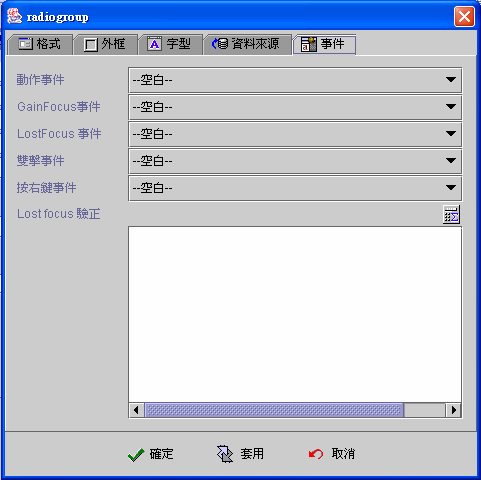

|

選擇鈕 (Radiogroup component)

共同屬性 (common properties)
資料來源(data source)
新增選擇按鈕
(create new radio button)
事件 (event)
運算式屬性存取
(formula get/set properties)
選擇鈕元件(Radiogroup
component) 中存在多個選擇按鈕 (radio button)，但同時只有一個選擇按鈕是在選取
(selected)
的狀態。選擇鈕元件中的選擇按鈕會依序運算選取條件(selected
condition) 的運算公式 (formula)，當結果值為真 (0 或 空字串為偽FALSE
，否則為真) 時，該選擇按鈕設定為選取 (selected)
狀態，其餘選擇按鈕 (radio button) 設定為不選取 (unselected)
狀態。
選擇鈕元件(Radiogroup
component)，以被選取的選取按鈕 (radio button)
的選取值運算式結果值為元件內含值，如果選擇鈕元件連結
(binding)
資料欄位 (data field) ，當資料來源 (data source) 編輯存檔 (save)
時，將以此內含值填入資料欄位 (data field)。設計師以運算公式
(formula) 取值 {選擇鈕元件名稱} 時，系統亦回覆此內含值。
選擇鈕元件可以不連結任何資料欄位，如果配合當任何元件值改變時重新檢查
的屬性，可以隨時以各個選擇按鈕的選取條件運算公式
(formula)
的結果值，檢視選取狀態，並根據選取狀態，取得被選取(selected) 選擇按鈕的選取值。
資料來源
(data source)
-
資料來源 (data source)：選擇資料來源。
-
資料欄位 (data field)：選擇資料來源中的資料欄位。
-
當任何元件值改變時重新檢查：核選時，當其他元件內含值改變
(changed) 或資料來源移動(move)、存檔 (save) 或刪除 (delete) 時，每個選擇按鈕依序重新計算選取條件
(selected
condition) ，改變選擇按鈕的選取狀態 (selected state)。
-
按鈕欄位 (columns)：將選擇按鈕分為幾個欄位。
-
選擇按鈕 (radio button)：新增、刪除、存檔、上移、下移選擇按鈕。
新增選擇按鈕 (create Radio button)
版面 (face)
選取 (selected)
字型 (font)
按下 建立
 新增選擇按鈕 (radio button)。
新增選擇按鈕 (radio button)。
版面 (face)
-
文字 (text)：選擇按鈕的說明文字。
-
易記鍵
(mnemonic)：定義易記鍵，先核選使用，再按住
"ALT" 鍵，接著按下所要的易記鍵。應用程式執行時，使用者按住
"ALT" 鍵+易記鍵，等於以滑鼠按選 (clicked) 選擇按鈕
(radio button)。
-
水平 (text horizontal position)：文字與選取圖示
(icon) 的水平相對位置。
-
垂直 (text vertical position)：文字與選取圖示
(icon) 的水平相對位置為中 (center) 時， 文字與選取圖示 (icon)
的垂直相對位置。
-
Paint 選項：以下屬性必須元件的屬性為不透明
(opaque) 時才有作用。
-
Focus (paint focus)：當元件擁有
Focus 時 (focus owner)，在文字上顯示 Focus 框線。
-
塗滿 (paint fill)：當使用者以滑鼠或按鍵按下選擇按鈕時，元件以預設塗滿顏色為背景顏色，滑鼠放開
(release) 時，恢復為原設定背景顏色。
-
外框 (paint border)：顯示選擇按鈕外框。
-
不選取圖示 (unselected icon)：選擇按鈕的不選取
(unselected) 狀態的顯示圖示 (icon)。
-
選取圖示 (selected icon)：選擇按鈕的選取
(selected) 狀態的顯示圖示 (icon)。
-
滑鼠滑過時
(roll over icon)：當滑鼠移到選擇按鈕上，選擇按鈕是不選取
(unselected) 狀態時會改變為此圖示。
選取 (selected)
-
選取條件 (selected condition)：選擇按鈕判斷是否標示為選取
(selected) 的條件運算公式 (formula)。
-
選取值 (selected data)：選擇按鈕為選取
(selected) 時，以選取值運算公式 (formula)
的結果值為選擇鈕內含值，如果選擇鈕元件連結 (binding)
資料欄位 (data field) ，當資料來源 (data Source) 編輯存檔 (save)
時，將以此內含值填入資料欄位 (data field)。設計師以運算公式
(formula) 取值 {選擇鈕元件名稱} 時，系統亦回覆此內含值。
字型 (font)
▲Top
事件
(event)
-
動作事件 (action event)：使用者按選
(clicked)
任一選擇按鈕時，即引發事件 (fire event)。
-
Gain Focus 事件：當 Focus
移入選擇鈕時，即引發事件 。
-
Lost Focus 事件：當 Focus
移出選擇鈕時，即引發事件 。
-
雙擊事件 (double click event)：當雙擊滑鼠的左鍵時，即引發事件。
-
按右鍵事件 (right click event)：當按下滑鼠右鍵時，即引發事件。

▲Top
運算式屬性存取
(formula get/set properties)
SetProp("元件名稱",
"屬性", 值) ：屬性設定。
SetProp("元件名稱",
"屬性", 值1, 值2)：屬性設定。
GetProp("元件名稱",
"屬性")：屬性讀取。
| Set
Properties |
| 屬性(Properties) |
值1
(Value 1) |
值2
(Value 2) |
說明 (Descriptions) |
| enabled |
1 致能，0 失效 |
|
致能與失效。 |
| enabledat |
N, 第N個選擇按鈕, 由 1 起算。 |
1 致能，0 失效 |
致能與失效。 |
| setfocus |
1 設定 Focus |
|
設定 Focus。 |
| visible |
1 顯示，0 隱藏 |
|
顯示與隱藏。 |
| repaint |
1 重繪，2
立即重繪 |
|
重繪。 |
| revalidate |
1 運算式重新計算 |
|
核選運算式重新計算。 |
| selected |
N 核選第 N 個選擇按鈕 |
|
核選第 N 個選擇按鈕，N 由 1 起算。 |
| bg |
RGB(red, green, blue) |
|
背景顏色。值1 必須以Formula 的 RGB() 運算式給值。
|
| fg |
RGB(red, green, blue) |
|
前景顏色。值1 必須以Formula 的 RGB() 運算式給值。
|
| x |
正整數值 |
|
左座標位置。 |
| y |
正整數值 |
|
上座標位置。 |
| w |
正整數值 |
|
元件寬度。 |
| h |
正整數值 |
|
元件高度。 |
| xy |
正整數值 |
正整數值 |
左(Value1) 上(Value2) 座標位置。 |
| wh |
正整數值 |
正整數值 |
元件寬(Value1) 高(value2)度。 |
| Get
Properties |
| 屬性(Properties) |
傳回值
(Return value) |
說明 (Descriptions) |
| isenabled |
1 致能，0 失效 |
致能與失效。 |
| isvisible |
1 顯示，0 隱藏 |
顯示與隱藏。 |
| selected |
N 被核選的是第 N 個選擇按鈕 |
被核選的是第 N 個選擇按鈕，N 由 1 起算。 |
| x |
整數值 |
左座標位置。 |
| y |
整數值 |
上座標位置。 |
| w |
整數值 |
元件寬度。 |
| h |
整數值 |
元件高度。 |
▲Top
Copyright © 2001~
2004 Probe Technology . All Rights Reserved.
Questions, comments,
and suggestions to Service@probe.com.tw
|